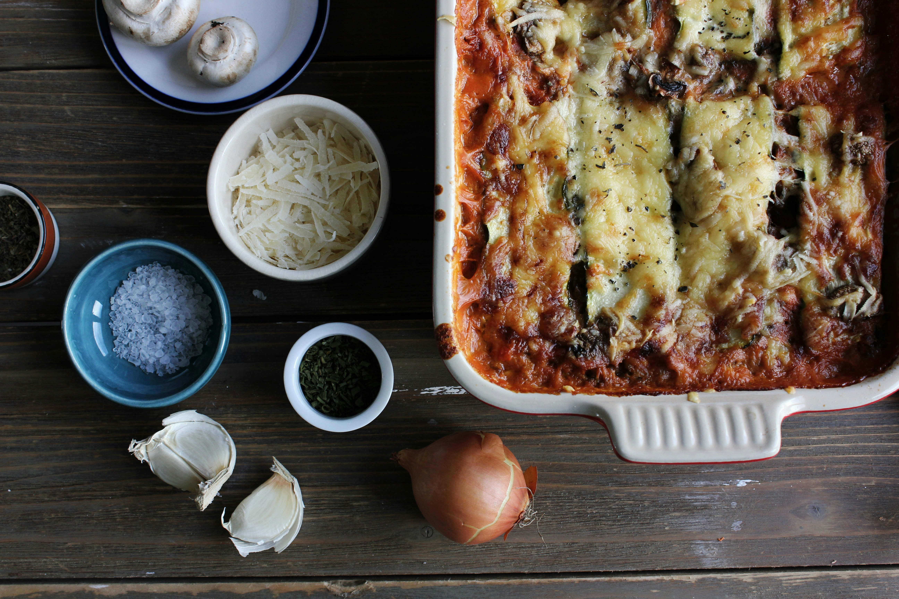

Lasagna recipe.

The Lasagna is an Italian dish consisting of lasagne baked with meat or vegetables and a cheese sauce.
How to prepare lasagna:
To prepare lasagna, preheat your oven to 375°F (190°C) and gather lasagna noodles, ground beef, ricotta cheese, shredded mozzarella, Parmesan, marinara sauce, garlic, onion, olive oil, basil, and oregano. Cook the lasagna noodles according to package instructions. In a skillet, sauté chopped onion and garlic in olive oil, then add ground beef and cook until browned. Stir in marinara sauce and season with salt, pepper, and Italian herbs.
To assemble, spread a thin layer of meat sauce in a baking dish, then layer noodles, meat sauce, ricotta, mozzarella, and Parmesan. Repeat until you run out of ingredients, finishing with mozzarella and Parmesan on top. Cover with foil and bake for 25 minutes, then remove the foil and bake for an additional 20-25 minutes until the cheese is bubbly and golden brown. Let it rest for 10 minutes before serving. Enjoy!
What are the ingredients?
- Lasagna noodles
- Ground beef
- Ricotta cheese
- Shredded mozzarella
- Parmesan
- Marinara sauce
- Garlic and Onion
- Olive oil
- Basil, oregano and salt
Steps to prepare it:
- Preheat and Gather Ingredients:
- Preheat your oven to 375°F (190°C).
- Gather lasagna noodles, ground beef, ricotta cheese, shredded mozzarella, Parmesan, marinara sauce, garlic, onion, olive oil, basil, and oregano.
- Cook Lasagna Noodles:
- Cook the lasagna noodles according to package instructions.
- Drain and set them aside.
- Prepare Meat Sauce:
- In a skillet, heat olive oil over medium heat.
- Sauté chopped onion and garlic until fragrant.
- Add ground beef and cook until browned.
- Stir in marinara sauce and season with salt, pepper, basil, and oregano.
- Simmer the mixture for a few minutes.
- Assemble the Lasagna:
- Spread a thin layer of meat sauce in a baking dish.
- Place a layer of cooked lasagna noodles on top.
- Add a layer of meat sauce, dollops of ricotta cheese, shredded mozzarella, and Parmesan.
- Repeat layers until ingredients are used up, finishing with mozzarella and Parmesan on top.
- Bake:
- Cover the baking dish with aluminum foil.
- Bake for 25 minutes.
- Remove the foil and bake for an additional 20-25 minutes, until the cheese is bubbly and golden brown.
- Rest and Serve:
- Let the lasagna rest for 10 minutes before serving. Enjoy!